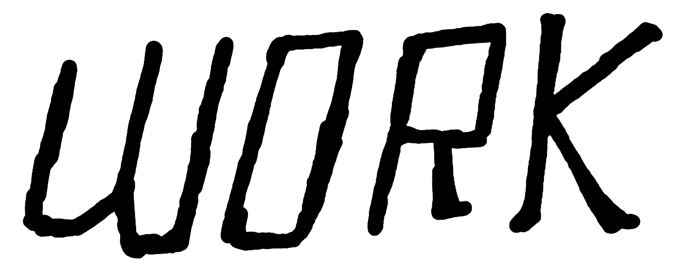

I'm helping tell science stories for kids.
The Washington PostI produced international audio stories for 'Post Reports' and assisted on 'The 7'. Memorable pieces include one on the sinking of a submersible off the coast of Greece and the state of Press Freedom in India.
Radiolab
I pitched, researched, interviewed, cut tape, made a promo, shared a story and attended the New York Public Radio gala terrified.
Out There
I produced a story on a friend about disease, fear, and mountain biking.
The Daily Californian
42 Careers is my favorite piece I've worked on.
I vox-popped people in Golden Gate Park,
phone-interviewed poets, musicians, producers, chefs and my friends,
which led to a 50-minute story that concluded that the meaning of life is other people.
I also produced
a story on People's Park
that won a best podcast award from the CCMA.